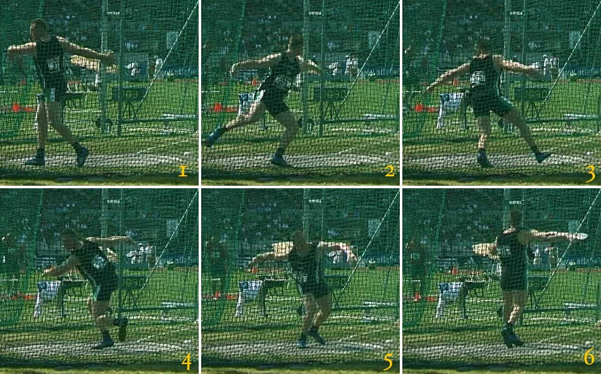

ATLETIKA / SILA V POHYBE
JEDEN KRUH.
ŽIADNE LIMITY.
Hod diskom spája silu, rýchlosť a presnosť do jediného plynulého pohybu. Každý pokus sa začína v kruhu a končí letom, ktorý rozhodnú centimetre. Za krátkym okamihom odhodu sú hodiny tréningu a hľadania rovnováhy. Objav disciplínu, ktorej príbeh siaha až do antického Grécka.
Spoznaj hod diskom ↗01 / OBJAV DISCIPLÍNUFoto: Weia Reinboud · CC BY-SA ↗
2,5 mPRIEMER VRHAČSKÉHO KRUHU
2 kgDISK DOSPELÝCH MUŽOV
1 kgDISK DOSPELÝCH ŽIEN
VIAC NEŽ LEN SILA
Rytmus. Rotácia.
Dokonalý okamih.
O výsledku rozhoduje súhra celého tela. Spoznaj základný pohyb, pozri si súťaž a objav korene tohto športu.
Pozrieť galériu →Cesta históriou →